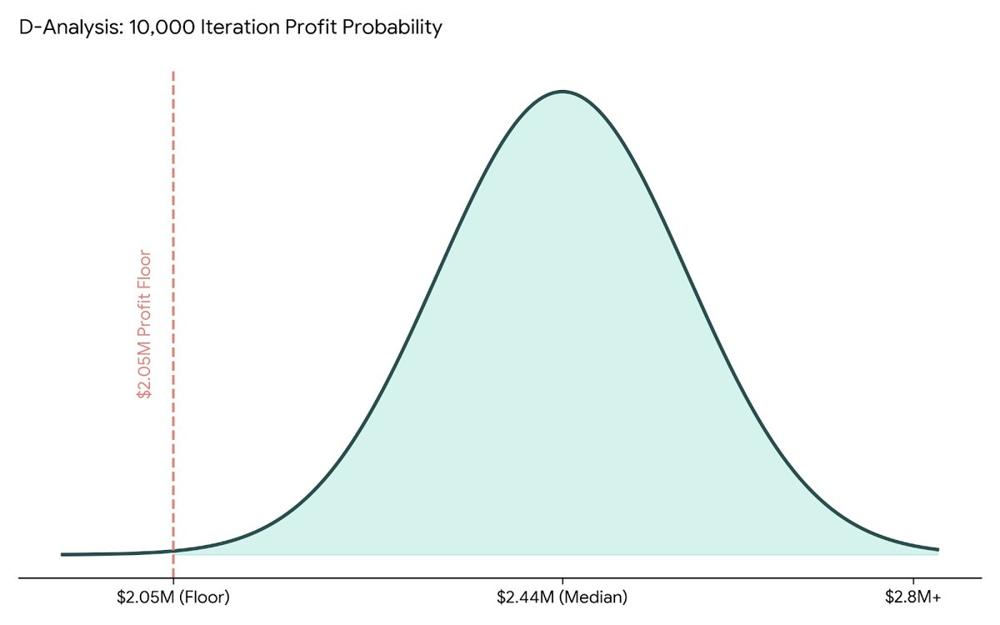

01 / DECISION ANALYSIS
Bucka-Brew Investment Analysis
98% chance of at least $2.05M in profit over three years
- Financial modeling
- Monte Carlo simulation
- What-if analysis
- Correlation analysis
Details
Context: A restaurant on Rainey Street in Austin asked whether to invest $175,000 in its own microbrewery.
What I did:
- Built a 36-month financial model covering pricing, production and costs
- Tested buying versus renting brewing tanks. Buying 10 tanks came out about $24K ahead.
- Ran 10,000 simulations to stress-test profit against changing demand
Result: Recommended the investment. It pays back in 9 months, with a 98% chance of at least $2.05M in profit over three years.
What I learned: A single forecast hides risk. Simulation turns it into a range you can plan around.